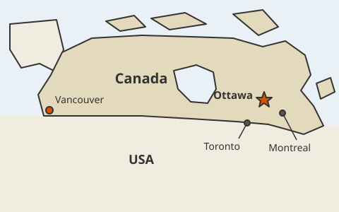

Kanada
Mit einem KI-Tutor lernen
Ein KI-Tutor erklärt dir diese Seite und hilft dir bei den Aufgaben. Wähl deinen Assistenten:
Mit Claude öffnen Mit ChatGPT öffnen Mit Mistral Vibe öffnen
Du nutzt dein eigenes Konto beim Anbieter. Der Assistent ist kein Angebot von lernapps.net: lernapps liefert nur Inhalte und Aufgaben. Die Wahl gilt für alle Seiten, nur auf diesem Gerät.
Ein Abstecher zum Nachbarn
Auf Mr Hills Weltkarte liegt nördlich der USA ein sehr großes Land. Sophie fragt Jayden, was er darüber weiß. Vorher eine Frage an dich.
Aufgabe
Lösung
im Süden
Im Süden liegt Mexiko.
im Westen
Im Westen liegt der Pazifik.
im Norden richtige Antwort
Kanada liegt im Norden der zusammenhängenden Staaten der USA.
Im Norden der USA liegt Kanada, im Süden Mexiko.
Das kannst du danach: Du stellst Kanada vor: wo es liegt, wie die Hauptstadt heißt, welche zwei Amtssprachen es hat und wer die Indigenous peoples sind.
Jayden erzählt von Kanada
- Sophie: Hi Jayden! Mr Hill says Canada is your neighbour. Is it a big country?
- Jayden: Yes, it is huge! Only one country is bigger. Canada is north of the USA, and the border between our countries is the longest in the world. (I write neighbor, but you write neighbour.)
- Sophie: Is Canada by the sea?
- Jayden: Yes, it has three oceans: the Atlantic in the east, the Pacific in the west and the Arctic in the north. Canada has ten provinces and three territories.
- Sophie: What is the capital? Is it Toronto?
- Jayden: No, it is Ottawa. Toronto, Montreal and Vancouver are the biggest cities.
- Sophie: Do people speak English in Canada?
- Jayden: Yes, but also French! English and French are the two official languages of the Canadian government. Most French speakers live in Quebec.
- Jayden: On many packages you can read English and French.
- Sophie: Who lived in Canada first?
- Jayden: Indigenous peoples have lived there for thousands of years. They are the First Nations, the Inuit and the Métis.
- Jayden: Today about five percent of the people in Canada are Indigenous. They speak many different languages. In Nunavut, Inuktitut is an official language.
| Englisch | Deutsch |
|---|---|
| the border | die Grenze |
| the province | die Provinz |
| the territory | das Territorium (ein Gebiet im Norden Kanadas) |
| the Arctic | die Arktis |
| an official language | eine Amtssprache |
| the package | die Verpackung |
| Indigenous | indigen, ursprünglich dort lebend |
| the First Nations, the Inuit, the Métis | drei Gruppen der Indigenous peoples Kanadas |
Verstehen, belegen, meinen
Aufgabe
Lösung
Englisch ist die einzige Amtssprache.
Auch Französisch ist eine Amtssprache.
Englisch und Französisch sind beide Amtssprachen. richtige Antwort
Beide Sprachen sind Amtssprachen.
Französisch spricht man nur in Frankreich.
Französisch gibt es auch in Kanada.
Kanada hat zwei Amtssprachen.
Aufgabe
Lösung
Richtige Antwort: Quebec – hier leben die meisten Menschen, die Französisch sprechen; Nunavut – hier ist Inuktitut eine Amtssprache; Ottawa – die Hauptstadt von Kanada; Toronto – eine der größten Städte, aber nicht die Hauptstadt
Die Hauptstadt ist nicht die größte Stadt, und Französisch hat in Quebec viele Sprecher.
Aufgabe
Lösung
Zeile 8
Zeile 8 handelt von Amtssprachen.
Zeile 2
Zeile 2 handelt von der Größe.
Zeile 11 richtige Antwort
Dort steht: seit Tausenden von Jahren.
Zeile 12
Zeile 12 nennt die Menschen heute.
Zeile 11 nennt Tausende von Jahren.
Offene Aufgabe
Kanada hat zwei Amtssprachen. Was findest du daran gut oder schwierig? Schreibe zwei bis drei Sätze auf Englisch, zum Beispiel mit „I think … because …“.
Tipp
Schau in die Zeilen 8 und 9. Dort stehen die Sprachen.
Eine gute Antwort enthält:
Lösung
I think two official languages are good because you can talk to more people. But it is difficult to learn two languages.
Kanada auf der Karte

© CC-BY-4.0Schemakarte, nicht genau nach Maßstab. Norden ist oben. Der Stern ist die Hauptstadt, die grauen Punkte sind große Städte.
Merke
Eine official language (Amtssprache) benutzt die Regierung eines Landes in ihren Texten und Ämtern. Daneben können in einem Land viele weitere Sprachen gesprochen werden.
Indigenous sagst du von Menschen, die schon vor den Europäern in einem Land lebten. Inuit ist schon ein Plural: Du schreibst the Inuit, ohne -s. In den USA sagt man dafür Native Americans.
Übung
Aufgabe
Lösung
Richtige Antwort: 1 – Arctic Ocean; 2 – Pacific Ocean; 3 – Atlantic Ocean; 4 – USA
Die drei Ozeane liegen im Norden, Westen und Osten Kanadas, im Süden liegen die USA.
Aufgabe
Ergänze das fehlende Wort.
Tipp
Schau in den Chat und in das Randglossar.
- Die Hauptstadt von Kanada heißt Ottawa. → The capital of Canada is ….
- In Kanada sprechen viele Menschen Französisch. → Many people in Canada speak ….
- Kanada liegt im Norden der USA. → Canada is … of the USA.
Lösung
- The capital of Canada is Ottawa.
- Many people in Canada speak French.
- Canada is north of the USA.
Aufgabe
Schreibe die Sätze auf Englisch.
Tipp
Schau in Zeile 4 und Zeile 12.
- Kanada hat zehn Provinzen und drei Territorien.
- Inuktitut ist eine Amtssprache in Nunavut.
Lösung
- Canada has ten provinces and three territories.
- Inuktitut is an official language in Nunavut.
Aufgabe
Hör zu und schreibe, was du hörst.
Tipp
Hör jeden Satz zweimal.
- KI
- KI
- KI
Lösung
- Many people live near the border with the USA.
- Canada and the USA are neighbours.
- Many Indigenous languages are spoken in Canada.
Selbst sprechen
Aufgabe
Hör zu, sprich nach und nimm dich auf. Vergleiche dann mit dem Original.
Tipp
Sprich langsam nach. Achte auf French, Canadians und Ottawa.
- French is a first language for many Canadians.KI
- Toronto is bigger than Ottawa.KI
- Canada is the second biggest country in the world.KI
Zum Aufnehmen braucht diese Aufgabe JavaScript. Die Beispiele kannst du auch ohne anhören.
Lösung
- French is a first language for many Canadians.
- Toronto is bigger than Ottawa.
- Canada is the second biggest country in the world.
Nächster Halt
Der Abstecher ist zu Ende. Der nächste Halt der Weltkarte liegt wieder in den USA, in Chicago: Wie verbringen Jugendliche dort ihre Freizeit?
Fehler gefunden oder eine Idee für diese App?